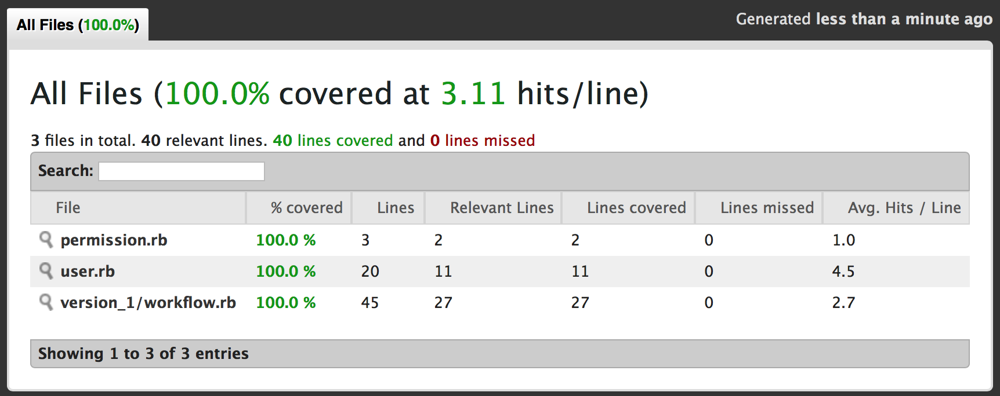

Mutants, zombies… Yes, there is an inconsistency between the article’s topic and image to attract attention. But I swear to god it is actually the poster hanging on the wall inside my flat.
The topic of this article is mutation testing – a very special methodology among others in the field of testing software quality. It is capable to amaze, make you think you lost your mind and, finally, can bring peace into your programmer’s soul. I know, the definition sounds quite bold and pretentious, but I hope that after reading the rest of the article you’ll be convinced just like I am.
Mutation testing technique is based on quite a simple idea. Say, you have a bunch of code and a number of tests to verify its correctness. Doesn’t matter how those tests were born: using techniques like TDD or written afterwards. Mutation testing allows to verify that your test suite is full. By full I mean – there is no code (code execution path, to be precisely correct) that is not covered with at least one test case.
Program Correctness
Why do we have to measure test coverage after all? To be sure that the program behaves as intended, to protect from regression failures, etc. How about program correctness? How do we get confidence that the program works correctly on all valid inputs? Well, it’s hard to cover all program states (for some programs is’t not possible at all). Consider function next_char:
def next_char(char)
char.ord.next.chr
endA quite simple function accepting a character and returning the next one in ASCII table. To prove it’s correct, it would be needed to pass every possible char out there, including the edge case for "\xFF".
A light change to next_char (now it accepts the optional step parameter to specify how far to jump) function makes testing impossible:
def next_char(char, step = 1)
(char.ord + step).chr
endTo fully cover all input parameter space, we would need to pass every possible integer value for each possible char… So, I think it’s clear now why program correctness will always remain in the field of computer science. However, there are other kinds of metrics, letting you gain confidence that your code is actually correct.
Coverage
There are test coverage tools out there for almost every language. Yes, but most of them collect statistics only about source code lines, namely, whether particular line of source code was executed or not (and how many times). But in fact, there is more than just line coverage: just look at this slide.
C1 is intended to track code branches execution. Each source code line can potentially contain more than one code branch. Think about conditions, loops, early returns and nasty things like try operator. To satisfy C1 coverage, tests should contain at least two cases, one for each of the execution branch. Otherwise, some branches may remain un-visited having, however, C0 coverage on this particular line satisfied.
C2 is called condition coverage. If condition expression consists of more than one sub-expressions (for example: if a == 2 || b.nil?), it ensures that each sub-expression gets evaluated to true and false at least once.
A real world example
Enough with theory, as programmers we love to get our hands dirty and see some code. Let’s write an example program to automate a simple workflow business process:
Workflow consists of many steps, each of which is configured with a threshold value. To proceed to the next step of the workflow, it’s necessary to get the number of votes from applicable (according to the voting permissions) users. If a user has enough permissions, it’s possible for him to force skip one workflow step. Every user with at least a voting permission can reject the current step of the voting process. Workflow will continue from the beginning of previous step. Inactive users cannot vote or reject. A user can only vote once on the same step.

Here is one possible implementation of the described workflow:
class Workflow
def initialize(steps_config)
@steps_config = steps_config
@current_step = 0
@votes = Array.new(steps_config.size) { Set.new }
end
def approve(actor)
return unless actor.active?
if actor.can_force_step?(@current_step)
increment
elsif actor.can_vote_on_step?(@current_step)
vote(actor)
end
end
def reject(actor)
return unless actor.active?
decrement if actor.can_vote_on_step?(@current_step) || actor.can_force_step?(@current_step)
end
def finished?
@current_step == @steps_config.size
end
private
def increment
@current_step += 1 unless finished?
end
def vote(actor)
@votes[@current_step] << actor
increment if @votes[@current_step].size >= @steps_config[@current_step]
end
def decrement
@votes[@current_step] = Set.new
@current_step -= 1 unless @current_step == 0
@votes[@current_step] = Set.new
end
endIt was written without any tests in mind, but looks… robust. All required business features are there: inactive users, duplicate votes, force approves, etc. So, let’s tests it! It would be a good idea to actually bring the example from the diagram to existence.
describe Workflow do
subject { Workflow.new([3, 2, 2]) }
it 'works in real world scenario' do
subject.approve(voter = User.new([VOTE])) # First vote on first step
subject.approve(voter) # Subsequent vote does not affect workflow state
subject.approve(User.new([VOTE])) # Second vote on first workflow step
subject.approve(User.new([VOTE], false)) # Inactive users cannot affect workflow state
subject.approve(User.new([VOTE])) # Final vote, workflow proceeds to the next step
subject.approve(User.new([NONE, FORCE])) # Workflow is forced to proceed to the third step
subject.reject(User.new([NONE, NONE, VOTE])) # Reject! Falling back to the second step and starting over
subject.approve(User.new([NONE, VOTE])) # Getting first
subject.approve(User.new([NONE, VOTE])) # And second vote on second step
expect do
subject.approve(User.new([NONE, VOTE, FORCE])) # Completing workflow by skipping voting process on last step
end.to change { subject.finished? }.from(false).to(true)
end
endRunning spec is successful indeed. Moreover, simplecov claims to have 100% code coverage!
➜ mentat git:(master) rspec version_1/workflow_spec.rb
Workflow
works in real world scenario
Finished in 0.00181 seconds (files took 0.13433 seconds to load)
1 example, 0 failures
Coverage report generated for RSpec to /Users/maksar/projects/mentat/coverage. 40 / 40 LOC (100.0%) covered.
Mutation testing
This is where the story might end for a mediocre developer. One would think that since coverage indicates we are good, there is no work left to do. Well, let’s not be in a hurry, mutant to the rescue!
$ mentat git:(master) mutant -I . -r version_1/workflow_spec.rb --use rspec 'Workflow'
What? Only 64.71%? It sounds very… sobering. Let’s see what just happened. We specified mutation target ('Workflow' string in the command line), mutant detected 7 mutation subjects (methods) in that class. For each subject, it has constructed an AST (Abstract Syntax Tree) of the code and tried to apply different mutations to it. Mutations are small code changes, for example: flipping a condition to its opposite, removing a whole line of code, changing constant value, etc. Mutations are easier to deal with working with AST instead of plain text, and that’s why mutant parses your code, applies mutation (new Mutant is born) and then converts AST back to code and inserts it into your VM, to let rspec execute tests against it (attempt to kill the Mutant). If all tests are passed, Mutant remains alive. Think about it: someone just deleted a whole line from your code, and tests are still passing… That basically means that a test suite does not contain enough examples to cover all execution branches.
On the screenshot above, mutant claims that if we remove condition check inside vote method, tests will continue to work. Hard to believe? Let’s verify:
def vote(actor)
@votes[@current_step] << actor
increment
endCode is changed, running specs:
$ mentat git:(master) rspec version_1/workflow_spec.rb -f p
.
Finished in 0.00144 seconds (files took 0.08017 seconds to load)
1 example, 0 failuresZero failures! It surprises me every time… After staring at other alive Mutants I finally realized how stupid I was, thinking that one test case proves correctness or can protect me from regressions. OK, enough being dumb, we can do better! This time I tried to write a very extensive test suite, covering every business feature one by one:
describe Workflow do
context 'empty workflow' do
subject { Workflow.new([]) }
it('should be already finished') { expect(subject).to be_finished }
ALL.each do |permission|
it("should remain finished after #{permission} reject action") do
expect { subject.reject(User.new(permission)) }.not_to change(subject, :finished?)
end
it("should remain finished after #{permission} approve action") do
expect { subject.approve(User.new(permission)) }.not_to change(subject, :finished?)
end
end
end
context 'workflow from single step' do
[0, 1].each do |votes|
context "where step requires #{votes} votes" do
subject { Workflow.new([votes]) }
it('should not be initially finished') { expect(subject).not_to be_finished }
it('should not be finished after approve from incapable actor') do
expect { subject.approve(User.new([NONE])) }.not_to change(subject, :finished?)
end
ACTIONABLE.each do |permission|
it("should be finished after #{permission} approve action") do
expect { subject.approve(User.new([permission])) }.to change(subject, :finished?)
end
it("should not be finished after inactive actors #{permission} actions") do
expect { subject.approve(User.new([permission], false)) }.not_to change(subject, :finished?)
end
end
end
end
context 'where step requires two votes' do
subject { Workflow.new([2]) }
it('should be finished only after first force action') do
expect { subject.approve(User.new([FORCE])) }.to change(subject, :finished?)
end
it('should be finished only after second vote action') do
expect { subject.approve(User.new([VOTE])) }.not_to change(subject, :finished?)
expect { subject.approve(User.new([VOTE])) }.to change(subject, :finished?)
end
it('should not be finished after subsequent vote action of the same actor') do
subject.approve(actor = User.new([VOTE]))
expect { subject.approve(actor) }.not_to change(subject, :finished?)
end
ACTIONABLE.each do |permission|
it("should be able to reset votes by reject action from #{permission} actor") do
subject.approve(User.new([VOTE]))
subject.reject(User.new([permission]))
expect { subject.approve(User.new([VOTE])) }.not_to change(subject, :finished?)
expect { subject.approve(User.new([VOTE])) }.to change(subject, :finished?)
end
it("inactive #{permission} actor cannot affect voting process") do
subject.approve(User.new([VOTE]))
subject.reject(User.new([permission], false))
expect { subject.approve(User.new([VOTE])) }.to change(subject, :finished?)
end
it('actor without permissions cannot reject') do
subject.approve(User.new([VOTE]))
subject.reject(User.new([NONE]))
expect { subject.approve(User.new([VOTE])) }.to change(subject, :finished?)
end
end
end
end
context 'Workflow from three steps' do
subject { Workflow.new([2, 2, 2]) }
it('reject should erase votes from current and previous step') do
subject.approve(User.new([FORCE]))
subject.approve(User.new([VOTE, VOTE]))
subject.approve(User.new([VOTE, VOTE]))
subject.reject(User.new([VOTE, VOTE, VOTE]))
expect { subject.approve(User.new([FORCE, FORCE, FORCE])) }.not_to change(subject, :finished?)
expect { subject.approve(User.new([FORCE, FORCE, FORCE])) }.to change(subject, :finished?)
end
end
endLet’s run our enemyfriend mutant once again:

Much better this time, 91.33% But not perfect, let’s see why:
def vote(actor)
- @votes[@current_step] << actor
+ @votes.fetch(@current_step) << actor
if (@votes[@current_step].size >= @steps_config[@current_step])
increment
end
endThis time, one of the mutant’s complains was about using .fetch method instead of just [] array accessor. You might think it’s not a big of a deal, but it’s worth thinking deeper. The difference between the semantics of [] and fetch is in absent values handling: [] will silently return nil, while fetch will raise an error. So, instead of just substituting accessors in our code to a more strict version, let’s think what mutant is actually trying to tell us… And the message is: “There might be a problem with error handling in your code or the test suite does not have a case, forcing your code to suffer from NoMethodError on nil values”.
OK, let’s try to write one:
it('should not raise error on inconsistent configuration') do
expect { Workflow.new([]).approve(User.new([VOTE])) }.not_to raise_error
endIt predictably fails with old good NotMethodError:
Workflow
empty workflow
should not raise error on inconsistent configuration (FAILED - 1)
Failures:
1) Workflow empty workflow should not raise error on inconsistent configuration
Failure/Error: expect { Workflow.new([]).approve(User.new([VOTE])) }.not_to raise_error
expected no Exception, got #<NoMethodError: undefined method `<<' for nil:NilClass> with backtrace:
# ./version_2/workflow.rb:36:in `vote'
# ./version_2/workflow.rb:15:in `approve'
# ./version_2/workflow_spec.rb:9:in `block (4 levels) in <top (required)>'
# ./version_2/workflow_spec.rb:9:in `block (3 levels) in <top (required)>'
# ./version_2/workflow_spec.rb:9:in `block (3 levels) in <top (required)>'
Finished in 0.00971 seconds (files took 0.08025 seconds to load)
1 example, 1 failureWhat can we do about it? Let’s actually try to apply the change, suggested by mutant. The vote method now looks like this:
def vote(actor)
@votes.fetch(@current_step) << actor
increment if @votes[@current_step].size >= @steps_config[@current_step]
endRunning tests again results in a different IndexError error:
Workflow
empty workflow
should not raise error on inconsistent configuration (FAILED - 1)
Failures:
1) Workflow empty workflow should not raise error on inconsistent configuration
Failure/Error: expect { Workflow.new([]).approve(User.new([VOTE])) }.not_to raise_error
expected no Exception, got #<IndexError: index 0 outside of array bounds: 0...0> with backtrace:
# ./version_2/workflow.rb:36:in `fetch'
# ./version_2/workflow.rb:36:in `vote'
# ./version_2/workflow.rb:15:in `approve'
# ./version_2/workflow_spec.rb:9:in `block (4 levels) in <top (required)>'
# ./version_2/workflow_spec.rb:9:in `block (3 levels) in <top (required)>'
# ./version_2/workflow_spec.rb:9:in `block (3 levels) in <top (required)>'
Finished in 0.01043 seconds (files took 0.0895 seconds to load)
1 example, 1 failureThis one is actually much better to work with. The code blows up exactly where it should, on the code containing accessing error, not later. In the previous run, it failed on << operator, which in real world examples may be far away from the place containing an error.
OK, we learned something useful, let’s not waste time on actually fixing it properly. Instead, I’ll just pretend IndexError is the desired behavior and replace all hash and array accessing methods to be fetch:
subject { Workflow.new([]) }
it('should raise IndexError on inconsistent configuration') do
expect { subject.approve(User.new([VOTE])) }.to raise_error(IndexError)
endRunning mutant again:

Better results: 92.95% What’s next?
def increment
- unless finished?
- @current_step += 1
- end
+ @current_step += 1
endSurprising again. I’m convinced I can fully rely on mutant now and will not try to double-check it once again. It looks like we did not check the case where somebody attempts to work with finished workflow, which forces @current_step variable to increase and @current_step == @steps_config.size invariant does not work anymore. Introducing new test and fixed code:
subject { Workflow.new([2]) }
it('finished workflow not should react on actions') do
expect { subject.approve(User.new([FORCE])) }.to change(subject, :finished?).from(false).to(true)
expect { subject.approve(User.new([FORCE, FORCE])) }.not_to change(subject, :finished?)
expect { subject.reject(User.new([FORCE, FORCE])) }.not_to change(subject, :finished?)
end
def increment
return if finished?
@current_step += 1
end
def decrement
return if finished?
@votes[@current_step] = Set.new
@current_step -= 1 unless @current_step == 0
@votes[@current_step] = Set.new
endMutant reports 94.17% of mutation coverage now, complaining about equality semantics:
def finished?
- @current_step == @steps_config.size
+ @current_step.equal?(@steps_config.size)
endThis is similar to the [] vs fetch case. Mutant again states that using a more strict code (see here for details) doesn’t brake the tests. In our case it doesn’t matter (equal? on integers is pretty straight-forward), but in real projects, especially with hashes and custom implementation of hash function it may lead to problems. So, we are replacing comparisons with equal? and running mutant:
def finished?
@current_step.equal?(@steps_config.size)
end
def decrement
return if finished?
@votes[@current_step] = Set.new
@current_step -= 1 unless @current_step.zero?
@votes[@current_step] = Set.new
endMutation coverage is now 95.25%, we are close to the finish line:
def decrement
if finished?
return
end
@votes[@current_step] = Set.new
unless @current_step.zero?
@current_step -= 1
end
- @votes[@current_step] = Set.new
endThis last line is there to remove any votes on the step, into which the workflow rejects to. I think our tests are only using FORCE permission after the reject operation. That is why removing this line does not break the suite. In fact, there is VOTE activity after reject action in "should be able to reset votes by reject action from #{permission} actor" case, but since workflow contains only one step, @current_step does not get decremented. We need to modify 'reject should erase votes from current and previous step' case slightly:
subject { Workflow.new([2, 2, 2]) }
let(:voter) { -> { User.new([VOTE, VOTE, VOTE]) } }
it('reject should erase votes from current and previous step') do
5.times { subject.approve(voter.call) }
subject.reject(voter.call)
expect { 3.times { subject.approve(voter.call) } }.not_to change(subject, :finished?)
expect { subject.approve(voter.call) }.to change(subject, :finished?)
endNow, when all Mutants have been killed, mutant happily reports 100% mutation coverage.
Mutant configuration:
Matcher: #<Mutant::Matcher::Config match_expressions: [Workflow]>
Integration: Mutant::Integration::Rspec
Expect Coverage: 100.00%
Jobs: 8
Includes: ["."]
Requires: ["version_6/workflow_spec.rb"]
Subjects: 7
Mutations: 316
Results: 316
Kills: 316
Alive: 0
Runtime: 8.57s
Killtime: 33.80s
Overhead: -74.66%
Mutations/s: 36.89
Coverage: 100.00%
Expected: 100.00%Conclusion
Traditional coverage tools only highlights code which was executed by running a test suite. Let’s run a little thought experiment: squint for a second, blink twice and imagine all assertion checks from your test suite have just disappeared. Will that affect coverage?.. It’s very refreshing to realize it will not. Furthermore, even having full branch coverage does not guarantee you are safe. See here for examples. Ask yourself a very simple question: are you still sure that the test suite you have is actually able to detect failures in the code?
Besides branch coverage, mutation testing is intended to ensure that code is meaningfully tested, giving your test suite powers to weed broken code out. However, no formal guarantees can be given, it’s a way to perfection, not ideal itself.
As a tool, mutant can be used for many tasks. One example is using it as a guide to write better tests (it highlights code paths which were never executed). Or it can be utilized to highlight tests, which are not contributing anymore into branch coverage (deleting such tests will still show 100% mutation coverage).
I personally don’t always use mutant in my day-to-day development job, and I’m not here to convince you absolutely must. But it helps to better understand and improve your code and coding skills in general. To explore different mutation operators mutant can apply to your code, see here. Give it a try some time in the future!